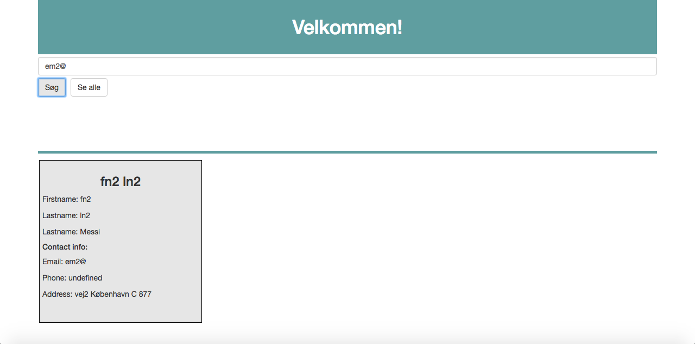

CA 2 - ORM REST AJAX
by
Yousef Mohsen & Janus Udsen
Afleveres søndag 19/03/2017
Link til GitHub:

Brugvejledning
Herunder ses startsiden til systemet. Man kan søge efter personer gennem deres emails.(Du kan teste med følgende mails: "em2@" eller "em3@"). Vi har desuden tilføjet en testknap, hvor man kan få vist samtlige bruger i databasen ved at trykke på knappen "Se alle".
Rest api
Nedenstående er vores rest api
| /api/person/complete | returns all persons in database |
| /api/person/complete/{id} | Moe |
| /api/person/email/{mail} | Returns a person with the given email |
| /api/person/contactinfo | returns contactinfo of all persons in database |
| /api/person/contactinfo/{id} | returns contactinfo of a specific person |